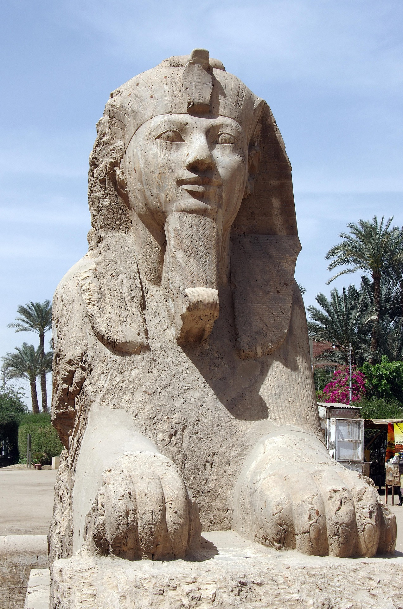
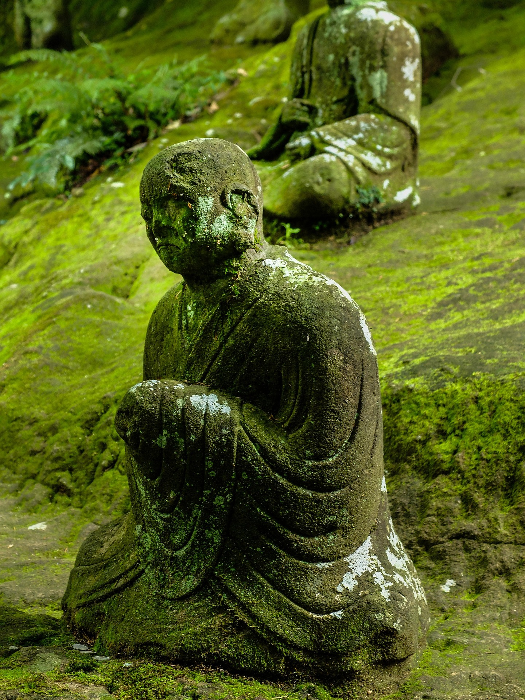
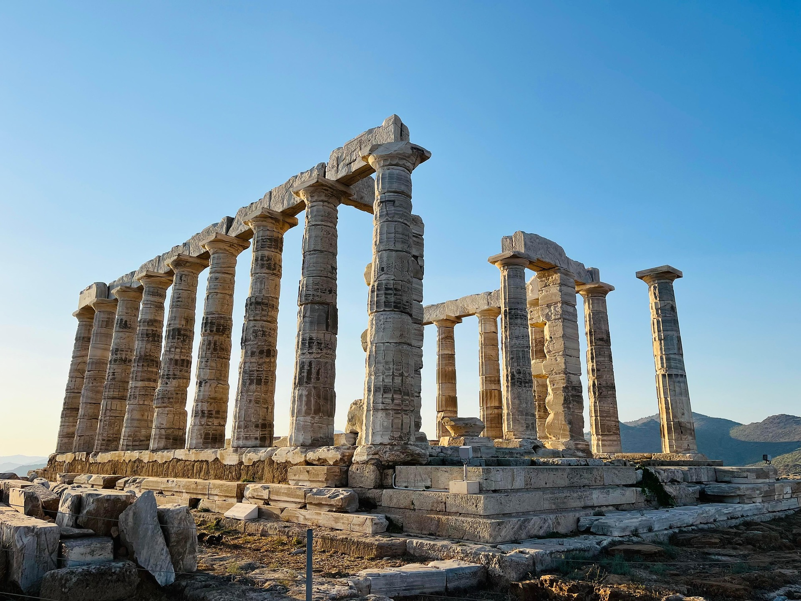
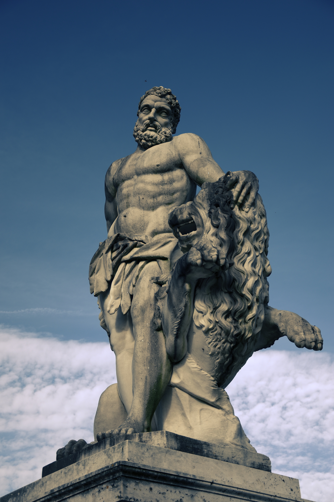
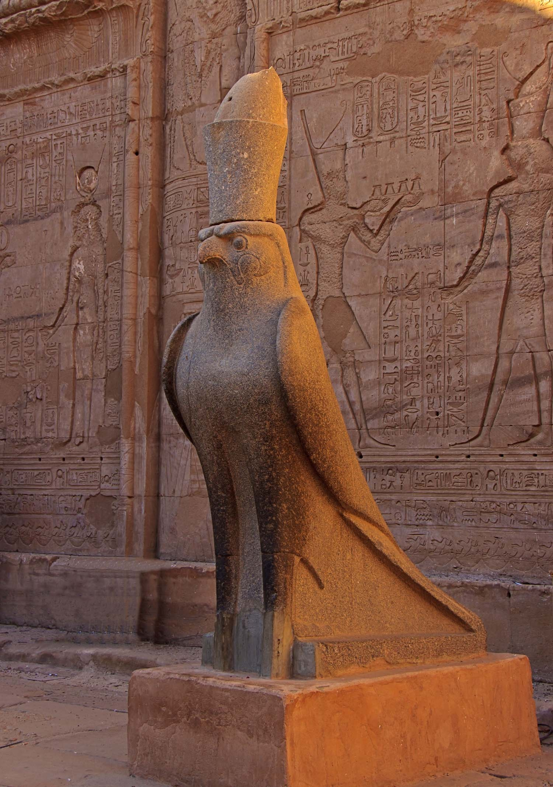
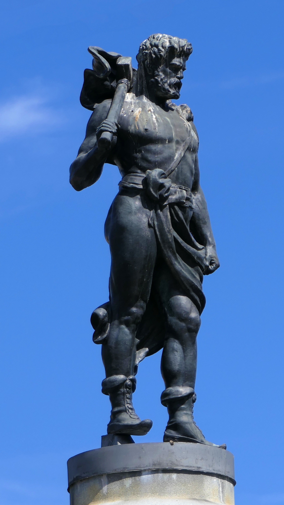
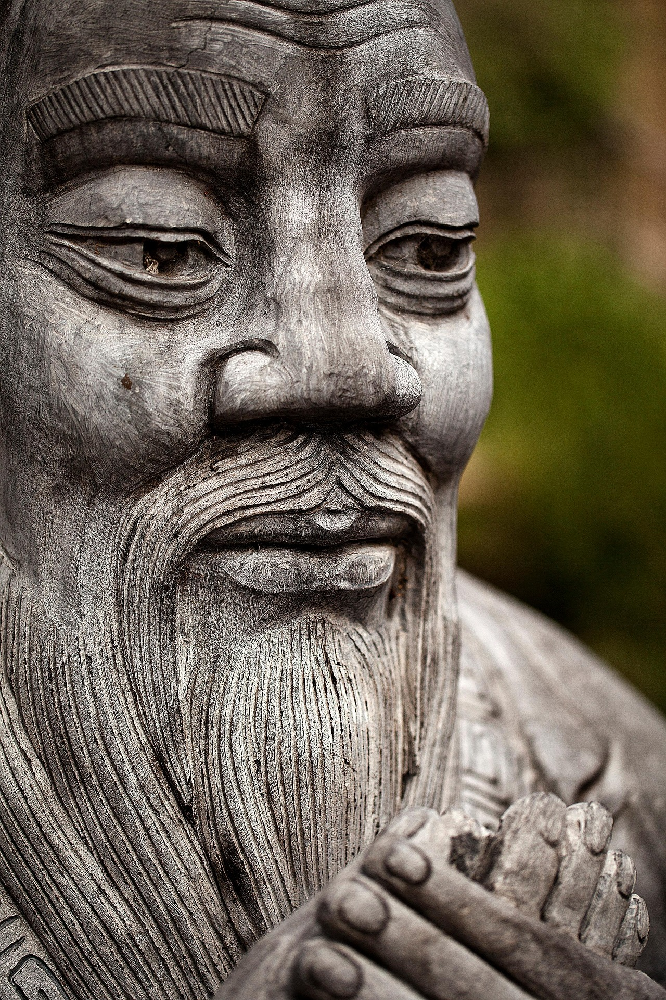
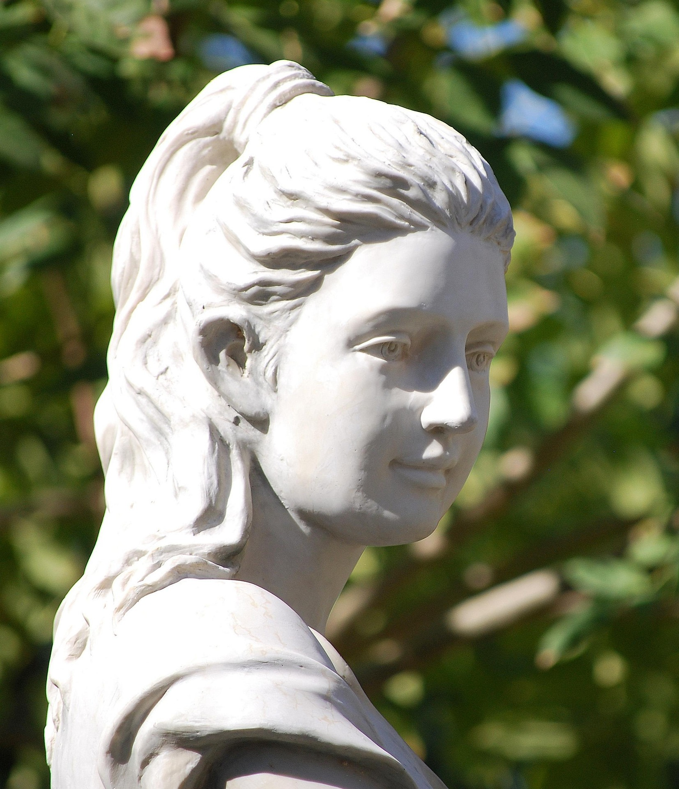
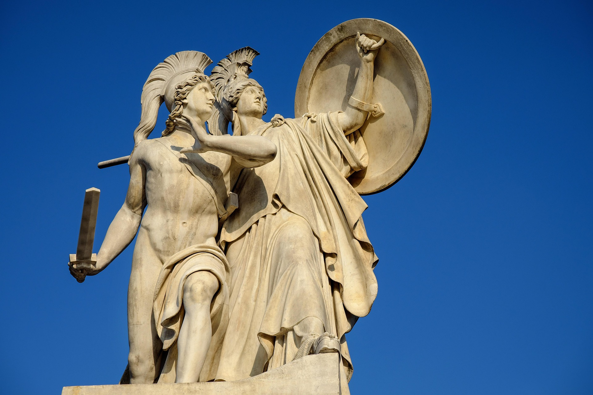

A Guide to Mythology
Explore ancient legends, meet legendary figures, and uncover the wisdom behind timeless myths.

Where the stories began
Myths originated in ancient cultures as a way for people to explain the world around them. Before modern science, myths helped explain natural events, the origins of life, the actions of gods, and important cultural traditions. They were usually passed down through generations by storytelling before eventually being written down.


Legends passed down
Myths are ancient stories filled with gods, heroes, monsters, and mysterious events. Passed down through generations, they helped people explain the unknown, understand nature, and share the beliefs of their culture. From epic battles to stories of creation, myths continue to capture our imagination and reveal how ancient people understood their world.

The Greek and Roman pantheons were groups of gods and goddesses worshipped by the ancient Greeks and Romans. Greek mythology featured powerful deities such as Zeus, Poseidon, Athena and Aphrodite, while the Romans adopted many of these gods into their own religion, often giving them different names, such as Jupiter, Neptune, Minerva and Venus. Although the two pantheons share many similarities, Roman religion developed its own traditions and incorporated influences from other cultures.

The Egyptian pantheon was a diverse group of gods and goddesses worshipped throughout ancient Egypt for thousands of years. Egyptian deities were often associated with natural forces, animals, and important aspects of life and death. Major figures included Ra, the sun god; Osiris, God of the afterlife; Isis, goddess of magic and motherhood; Horus, God of the sky; and Anubis, associated with death and the protection of the dead. Their myths helped explain the world and influenced many aspects of ancient Egyptian culture and religion.

The Norse pantheon was a group of gods and supernatural beings worshipped by the peoples of Scandinavia before the spread of Christianity. Among the most important deities were Odin, the wise god associated with knowledge and war; Thor, the powerful god of thunder; and Freyja, a goddess associated with love, fertility and magic. Norse mythology also tells of Ragnarök, a great series of events involving the destruction and renewal of the world.
Myth in the present
Today, myths continue to inspire stories, films, games, books, and art around the world. Modern creators often reimagine ancient characters and legends, giving them new settings, personalities, and perspectives while keeping their original themes alive. From superheroes to fantasy adventures, the influence of mythology can still be seen throughout popular culture.


